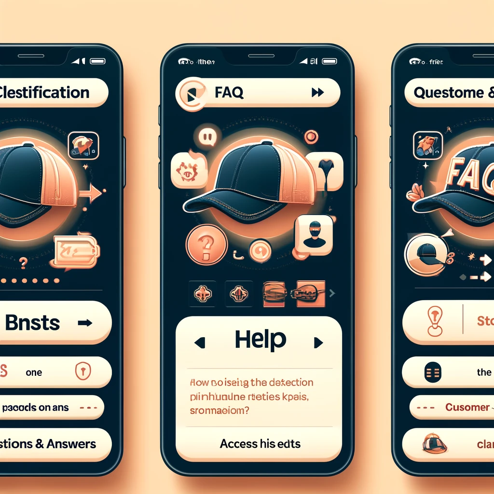

Cómo Contactar a la Empresa para Dudas, Quejas o Comentarios

- Ve a la página principal de la tienda:
- Abre el navegador e ingresa a la página de inicio de la tienda en línea.
- Busca la sección de “Contacto” o “Ayuda”:
- En el menú principal o en el pie de página, generalmente encontrarás un enlace llamado “Contacto”, “Ayuda” o “Atención al Cliente”. Haz clic en ese enlace para acceder a las opciones de contacto.
- Elige el método de contacto preferido:
- Formulario de contacto: Rellena el formulario con tu nombre, correo electrónico, tema del mensaje y una descripción de tu duda, queja o comentario. Cuando termines, haz clic en "Enviar".
- Correo electrónico: Anota la dirección de correo electrónico proporcionada y envía tu mensaje directamente desde tu cuenta de correo.
- Número de teléfono: Si prefieres hablar con un representante, llama al número de atención al cliente que se indica en la página.
- Chat en línea (si está disponible): Algunas tiendas tienen una ventana de chat en la página, donde puedes escribir directamente tus preguntas o comentarios.
- Revisa los tiempos de respuesta:
- En la página de contacto, normalmente se indica el tiempo estimado en que la empresa responderá a tus dudas o quejas. Esto te dará una idea de cuánto tiempo debes esperar para recibir respuesta.
- Consulta otras opciones de contacto en redes sociales:
- Muchas tiendas permiten que los clientes envíen mensajes directos en sus redes sociales, como Facebook, Instagram o Twitter. Puedes buscar estos perfiles y enviar un mensaje allí si prefieres esta opción.
- Guarda el número de referencia (si te lo dan):
- Si la empresa te proporciona un número de referencia para tu consulta o queja, guárdalo para hacer seguimiento en caso de que necesites volver a contactarlos.